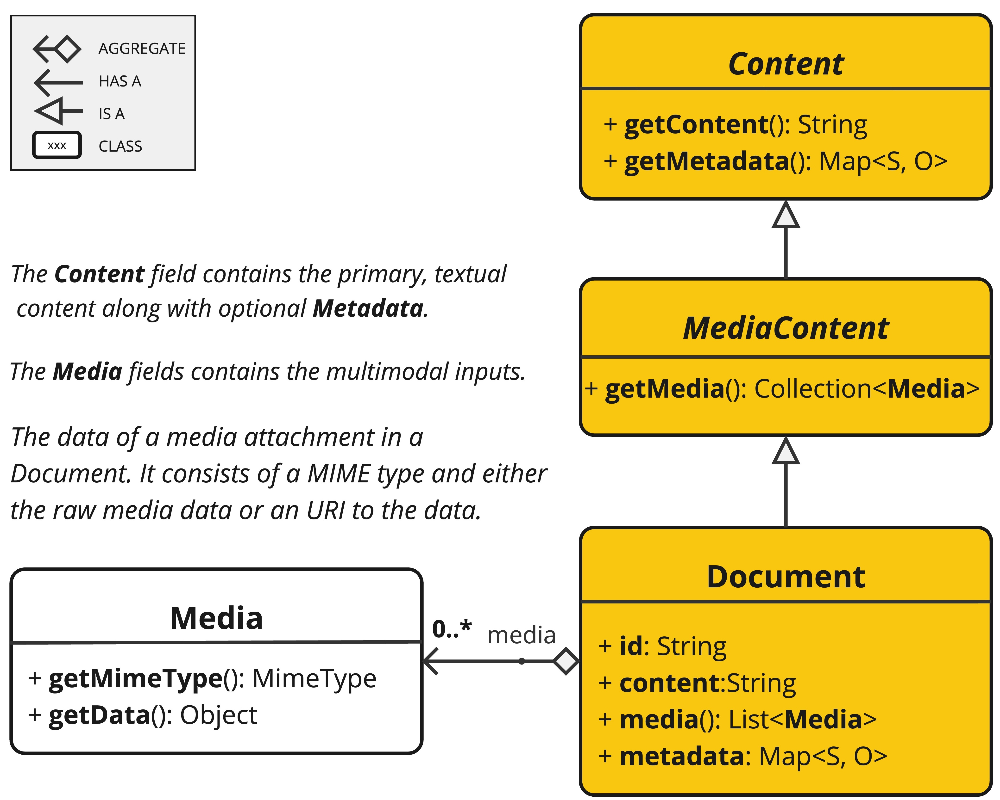
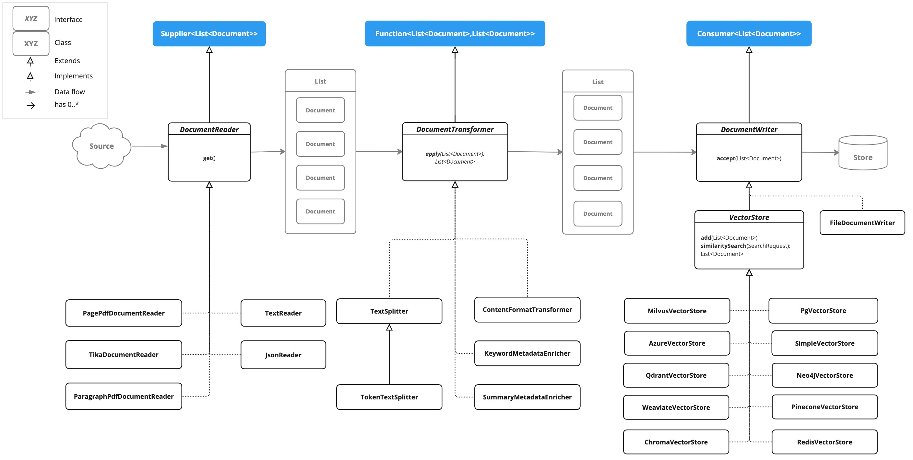

ETL管道 #
提取、转换和加载（ETL）框架在检索增强生成（RAG）用例中充当数据处理的主干。 ETL管道编排从原始数据源到结构化向量存储的流，确保数据处于人工智能模型检索的最佳格式。 RAG用例是一种文本，通过从数据体中检索相关信息来增强生成模型的能力，以提高生成输出的质量和相关性。
API概述 #
ETL管道创建、转换和存储文档实例。

Document类包含文本、元数据和可选的其他媒体类型，如图像、音频和视频。
ETL管道有三个主要组成部分，
- 实现供应商<List
>的DocumentReader - 实现函数<List
、List >的DocumentTransformer - 实现Consumer<List
>的DocumentWriter 在 DocumentReader的帮助下，从PDF、文本文件和其他文档类型创建Document类内容。 要构建简单的ETL管道，可以将每种类型的实例链接在一起。 假设我们有这三种ETL类型的以下实例
假设我们有这三种ETL类型的以下实例 - PagePdfDocumentReader——DocumentReader的实现
- TokenTextSplitter——DocumentTransformer的一种实现
- VectorStore DocumentWriter的实现 要将数据基本加载到向量数据库中以与检索增强生成模式一起使用，请使用Java函数样式语法中的以下代码。
vectorStore.accept(tokenTextSplitter.apply(pdfReader.get()));
或者，您可以使用更自然地表达域的方法名
vectorStore.write(tokenTextSplitter.split(pdfReader.read()));
ETL接口 #
ETL管道由以下接口和实现组成。
文档阅读器 #
提供来自不同来源的文档源。
public interface DocumentReader extends Supplier<List<Document>> {
default List<Document> read() {
return get();
}
}
文件变压器 #
将一批文档转换为处理工作流的一部分。
public interface DocumentTransformer extends Function<List<Document>, List<Document>> {
default List<Document> transform(List<Document> transform) {
return apply(transform);
}
}
文档编写器 #
管理ETL流程的最后阶段，准备存储文档。
public interface DocumentWriter extends Consumer<List<Document>> {
default void write(List<Document> documents) {
accept(documents);
}
}
ETL类图 #
下面的类图说明了ETL接口和实现。 
文档阅读器 #
JSON格式 #
JsonReader处理JSON文档，将它们转换为Document对象列表。
示例 #
@Component
class MyJsonReader {
private final Resource resource;
MyJsonReader(@Value("classpath:bikes.json") Resource resource) {
this.resource = resource;
}
List<Document> loadJsonAsDocuments() {
JsonReader jsonReader = new JsonReader(this.resource, "description", "content");
return jsonReader.get();
}
}
构造函数选项 #
JsonReader提供了几个构造函数选项：
参数 #
- resource：指向JSON文件的Spring resource对象。
- jsonKeysToUse：JSON中的键数组，应该用作结果Document对象中的文本内容。
- jsonMetadataGenerator：一个可选的JsonMetadata发电机，用于为每个文档创建元数据。
行为 #
JsonReader按如下方式处理JSON内容：
- 它可以处理JSON数组和单个JSON对象。
- 对于每个JSON对象（在数组或单个对象中）：
- 它基于指定的jsonKeysToUse提取内容。
- 如果未指定键，则使用整个JSON对象作为内容。
- 它使用提供的JsonMetadataGenerator（如果未提供，则为空）生成元数据。
- 它使用提取的内容和元数据创建Document对象。
使用JSON指针 #
JsonReader现在支持使用JSON指针检索JSON文档的特定部分。该功能允许您轻松地从复杂的JSON结构中提取嵌套数据。
get（字符串指针）方法 #
public List<Document> get(String pointer)
该方法允许您使用JSON指针来检索JSON文档的特定部分。
参数 #
- 指针：JSON指针字符串（如RFC 6901中定义的），用于在JSON结构中定位所需的元素。
返回值 #
- 返回一个List
，其中包含从指针所在的JSON元素解析的文档。
行为 #
- 该方法使用提供的JSON指针导航到JSON结构中的特定位置。
- 如果指针有效并指向现有元素：
- 对于JSON对象：它返回一个包含单个文档的列表。
- 对于JSON数组：它返回一个Documents列表，数组中的每个元素对应一个列表。
- 如果指针无效或指向不存在的元素，则抛出IllegalArgumentException。
示例 #
JsonReader jsonReader = new JsonReader(resource, "description");
List<Document> documents = this.jsonReader.get("/store/books/0");
JSON结构示例 #
[
{
"id": 1,
"brand": "Trek",
"description": "A high-performance mountain bike for trail riding."
},
{
"id": 2,
"brand": "Cannondale",
"description": "An aerodynamic road bike for racing enthusiasts."
}
]
在本例中，如果将JsonReader配置为“description”作为jsonKeysToUse，则它将创建Document对象，其中内容是数组中每个自行车的“descriptions”字段的值。
备注 #
- JsonReader使用Jackson进行JSON解析。
- 它可以通过为数组使用流来有效地处理大型JSON文件。
- 如果在jsonKeysToUse中指定了多个键，则内容将是这些键的值的串联。
- 阅读器非常灵活，可以通过定制jsonKeysToUse和JsonMetadataGenerator来适应各种JSON结构。
文本 #
TextReader处理纯文本文档，将它们转换为Document对象列表。
示例 #
@Component
class MyTextReader {
private final Resource resource;
MyTextReader(@Value("classpath:text-source.txt") Resource resource) {
this.resource = resource;
}
List<Document> loadText() {
TextReader textReader = new TextReader(this.resource);
textReader.getCustomMetadata().put("filename", "text-source.txt");
return textReader.read();
}
}
构造函数选项 #
TextReader提供了两个构造函数选项：
参数 #
- resourceUrl：表示要读取的资源的URL的字符串。
- resource：指向文本文件的Spring resource对象。
配置 #
- setCharset（Charset Charset）：设置用于读取文本文件的字符集。默认值为UTF-8。
- getCustomMetadata（）：返回一个可变映射，您可以在其中为文档添加自定义元数据。
行为 #
TextReader按如下方式处理文本内容：
- 它将文本文件的整个内容读入单个Document对象。
- 文件的内容成为文档的内容。
- 元数据自动添加到文档：
- charset：用于读取文件的字符集（默认值：“UTF-8”）。
- source：源文本文件的文件名。
- 通过getCustomMetadata（）添加的任何自定义元数据都包含在文档中。
备注 #
- TextReader将整个文件内容读入内存，因此它可能不适合非常大的文件。
- 如果需要将文本拆分为较小的块，则可以在阅读文档后使用文本拆分器，如TokenTextSplitter：
List<Document> documents = textReader.get();
List<Document> splitDocuments = new TokenTextSplitter().apply(this.documents);
- 阅读器使用Spring的资源抽象，允许它从各种源（类路径、文件系统、URL等）读取。
- 可以使用getCustomMetadata（）方法将自定义元数据添加到读取器创建的所有文档中。
HTML（JSoup） #
JsoupDocumentReader处理HTML文档，使用JSoup库将它们转换为Document对象列表。
示例 #
@Component
class MyHtmlReader {
private final Resource resource;
MyHtmlReader(@Value("classpath:/my-page.html") Resource resource) {
this.resource = resource;
}
List<Document> loadHtml() {
JsoupDocumentReaderConfig config = JsoupDocumentReaderConfig.builder()
.selector("article p") // Extract paragraphs within <article> tags
.charset("ISO-8859-1") // Use ISO-8859-1 encoding
.includeLinkUrls(true) // Include link URLs in metadata
.metadataTags(List.of("author", "date")) // Extract author and date meta tags
.additionalMetadata("source", "my-page.html") // Add custom metadata
.build();
JsoupDocumentReader reader = new JsoupDocumentReader(this.resource, config);
return reader.get();
}
}
``JsoupDocumentReaderConfig允许您自定义JsoupDocumentReader的行为：
- charset：指定HTML文档的字符编码（默认为“UTF-8”）。
- 选择器：JSoup CSS选择器，用于指定要从中提取文本的元素（默认为“body”）。
- 分隔符：用于连接来自多个选定元素的文本的字符串（默认为“\n”）。
- allElements：如果为true，则从元素中提取所有文本，忽略选择器（默认为false）。
- groupByElement：如果为true，则为选择器匹配的每个元素创建单独的文档（默认为false）。
- includeLinkUrls：如果为true，则提取绝对链接URL并将其添加到元数据中（默认为false）。
- Metadatags：要从中提取内容的标记名称的列表（默认为[“description”，“keywords”]）。
- additionalMetadata：允许您将自定义元数据添加到所有创建的Document对象。
示例文档：my-page.html #
<!DOCTYPE html>
<html lang="en">
<head>
<meta charset="UTF-8">
<title>My Web Page</title>
<meta name="description" content="A sample web page for Spring AI">
<meta name="keywords" content="spring, ai, html, example">
<meta name="author" content="John Doe">
<meta name="date" content="2024-01-15">
<link rel="stylesheet" href="style.css">
</head>
<body>
<header>
<h1>Welcome to My Page</h1>
</header>
<nav>
<ul>
<li><a href="/">Home</a></li>
<li><a href="/about">About</a></li>
</ul>
</nav>
<article>
<h2>Main Content</h2>
<p>This is the main content of my web page.</p>
<p>It contains multiple paragraphs.</p>
<a href="https://www.example.com">External Link</a>
</article>
<footer>
<p>© 2024 John Doe</p>
</footer>
</body>
</html>
行为：
JsoupDocumentReader处理HTML内容并基于配置创建Document对象：
- 选择器确定用于文本提取的元素。
- 如果allElements为true，则中的所有文本都将提取到单个文档中。
- 如果groupByElement为true，则与选择器匹配的每个元素都会创建单独的文档。
- 如果allElements和groupByElement都不为true，则使用分隔符连接与选择器匹配的所有元素中的文本。
- 文档标题、来自指定标记的内容和（可选）链接URL被添加到文档元数据中。
- 将从URL资源中提取用于解析相对链接的基URI。 读取器保留所选元素的文本内容，但删除其中的任何HTML标记。
降价，降价 #
MarkdownDocumentReader处理Markdown文档，将它们转换为Document对象列表。
示例 #
@Component
class MyMarkdownReader {
private final Resource resource;
MyMarkdownReader(@Value("classpath:code.md") Resource resource) {
this.resource = resource;
}
List<Document> loadMarkdown() {
MarkdownDocumentReaderConfig config = MarkdownDocumentReaderConfig.builder()
.withHorizontalRuleCreateDocument(true)
.withIncludeCodeBlock(false)
.withIncludeBlockquote(false)
.withAdditionalMetadata("filename", "code.md")
.build();
MarkdownDocumentReader reader = new MarkdownDocumentReader(this.resource, config);
return reader.get();
}
}
MarkdownDocumentReaderConfig允许您自定义MarkdownDocumentum阅读器的行为：
- horizontalRuleCreateDocument：当设置为true时，Markdown中的水平规则将创建新的Document对象。
- includeCodeBlock：当设置为true时，代码块将与周围文本包含在同一文档中。如果为false，代码块将创建单独的Document对象。
- includeBlockquote：当设置为true时，区块引号将与周围文本包含在同一文档中。如果为false，则块引号创建单独的Document对象。
- additionalMetadata：允许您将自定义元数据添加到所有创建的Document对象。
示例文档：code.md #
This is a Java sample application:
```java
package com.example.demo;
import org.springframework.boot.SpringApplication;
import org.springframework.boot.autoconfigure.SpringBootApplication;
@SpringBootApplication
public class DemoApplication {
public static void main(String[] args) {
SpringApplication.run(DemoApplication.class, args);
}
}
Markdown also provides the possibility to use inline code formatting throughout the entire sentence.
Another possibility is to set block code without specific highlighting:
./mvnw spring-javaformat:apply
行为：MarkdownDocumentReader处理Markdown内容并基于配置创建Document对象：
- 标头成为Document对象中的元数据。
- 段落成为Document对象的内容。
- 代码块可以分为自己的Document对象，也可以包含在周围的文本中。
- 块引号可以分隔为自己的Document对象，也可以包含在周围的文本中。
- 水平规则可用于将内容拆分为单独的Document对象。
读取器在Document对象的内容中保留诸如内联代码、列表和文本样式之类的格式。
## PDF页面
`PagePdfDocumentReader`使用Apache PdfBox库来解析PDF文档
使用Maven或Gradle将依赖项添加到项目中。
```xml
<dependency>
<groupId>org.springframework.ai</groupId>
<artifactId>spring-ai-pdf-document-reader</artifactId>
</dependency>
或到Gradle build.Gradle构建文件。
dependencies {
implementation 'org.springframework.ai:spring-ai-pdf-document-reader'
}
示例 #
@Component
public class MyPagePdfDocumentReader {
List<Document> getDocsFromPdf() {
PagePdfDocumentReader pdfReader = new PagePdfDocumentReader("classpath:/sample1.pdf",
PdfDocumentReaderConfig.builder()
.withPageTopMargin(0)
.withPageExtractedTextFormatter(ExtractedTextFormatter.builder()
.withNumberOfTopTextLinesToDelete(0)
.build())
.withPagesPerDocument(1)
.build());
return pdfReader.read();
}
}
PDF段落 #
ParagraphPdfDocumentReader使用PDF目录（例如TOC）信息将输入的PDF拆分为文本段落，并为每个段落输出单个文档。
依赖关系 #
使用Maven或Gradle将依赖项添加到项目中。
<dependency>
<groupId>org.springframework.ai</groupId>
<artifactId>spring-ai-pdf-document-reader</artifactId>
</dependency>
或到Gradle build.Gradle构建文件。
dependencies {
implementation 'org.springframework.ai:spring-ai-pdf-document-reader'
}
示例 #
@Component
public class MyPagePdfDocumentReader {
List<Document> getDocsFromPdfWithCatalog() {
ParagraphPdfDocumentReader pdfReader = new ParagraphPdfDocumentReader("classpath:/sample1.pdf",
PdfDocumentReaderConfig.builder()
.withPageTopMargin(0)
.withPageExtractedTextFormatter(ExtractedTextFormatter.builder()
.withNumberOfTopTextLinesToDelete(0)
.build())
.withPagesPerDocument(1)
.build());
return pdfReader.read();
}
}
Tika（DOCX、PPTX、HTML…) #
TikaDocumentReader使用Apache Tika从各种文档格式中提取文本，如PDF、DOC/DOCX、PPT/PPTX和HTML。有关支持格式的全面列表，请参阅
Tika文档。
依赖关系 #
<dependency>
<groupId>org.springframework.ai</groupId>
<artifactId>spring-ai-tika-document-reader</artifactId>
</dependency>
或到Gradle build.Gradle构建文件。
dependencies {
implementation 'org.springframework.ai:spring-ai-tika-document-reader'
}
示例 #
@Component
class MyTikaDocumentReader {
private final Resource resource;
MyTikaDocumentReader(@Value("classpath:/word-sample.docx")
Resource resource) {
this.resource = resource;
}
List<Document> loadText() {
TikaDocumentReader tikaDocumentReader = new TikaDocumentReader(this.resource);
return tikaDocumentReader.read();
}
}
变压器 #
文本拆分器 #
TextSplitter是一个抽象基类，帮助划分文档以适应AI模型的上下文窗口。
标记文本拆分器 #
TokenTextSplitter``是TextSpliter的实现，它使用CL100K_BASE编码，根据令牌计数将文本拆分为块。
使用 #
@Component
class MyTokenTextSplitter {
public List<Document> splitDocuments(List<Document> documents) {
TokenTextSplitter splitter = new TokenTextSplitter();
return splitter.apply(documents);
}
public List<Document> splitCustomized(List<Document> documents) {
TokenTextSplitter splitter = new TokenTextSplitter(1000, 400, 10, 5000, true);
return splitter.apply(documents);
}
}
构造函数选项 #
TokenTextSplitter提供了两个构造函数选项：
参数 #
- defaultChunkSize：标记中每个文本块的目标大小（默认值：800）。
- minChunkSizeChars：每个文本块的最小大小，以字符为单位（默认值：350）。
- minChunkLengthToEmbed：要包含的块的最小长度（默认值：5）。
- maxNumChunks：从文本生成的最大区块数（默认值：10000）。
- keepSeparator：是否在块中保留分隔符（如换行符）（默认值：true）。
行为 #
TokenTextSplitter按如下方式处理文本内容：
示例 #
Document doc1 = new Document("This is a long piece of text that needs to be split into smaller chunks for processing.",
Map.of("source", "example.txt"));
Document doc2 = new Document("Another document with content that will be split based on token count.",
Map.of("source", "example2.txt"));
TokenTextSplitter splitter = new TokenTextSplitter();
List<Document> splitDocuments = this.splitter.apply(List.of(this.doc1, this.doc2));
for (Document doc : splitDocuments) {
System.out.println("Chunk: " + doc.getContent());
System.out.println("Metadata: " + doc.getMetadata());
}
备注 #
- TokenTextSplitter使用jtokkit库中的CL100K_BASE编码，该编码与较新的OpenAI模型兼容。
- 拆分器试图通过尽可能打破句子边界来创建语义上有意义的块。
- 来自原始文档的元数据将被保留并复制到从该文档派生的所有区块。
- 如果copyContentFormatter设置为true（默认行为），则原始文档中的内容格式化程序（如果设置）也会复制到派生块。
- 此拆分器对于为具有标记限制的大型语言模型准备文本特别有用，以确保每个块都在模型的处理能力范围内。
内容格式转换器 #
确保所有文档的内容格式一致。
关键字MetadataEnricher #
KeywordMetadataEnricher是一个DocumentTransformer，它使用生成人工智能模型从文档内容中提取关键字，并将它们作为元数据添加。
使用 #
@Component
class MyKeywordEnricher {
private final ChatModel chatModel;
MyKeywordEnricher(ChatModel chatModel) {
this.chatModel = chatModel;
}
List<Document> enrichDocuments(List<Document> documents) {
KeywordMetadataEnricher enricher = new KeywordMetadataEnricher(this.chatModel, 5);
return enricher.apply(documents);
}
}
施工单位名称 #
KeywordMetadataEnricher构造函数采用两个参数：
行为 #
KeywordMetadataEnricher按如下方式处理文档：
自定义 #
可以通过修改类中的KEYWORDS_TEMPLATE常量来定制关键字提取提示。默认模板为：
\{context_str}. Give %s unique keywords for this document. Format as comma separated. Keywords:
其中，{context_str}替换为文档内容，%s替换为指定的关键字计数。
示例 #
ChatModel chatModel = // initialize your chat model
KeywordMetadataEnricher enricher = new KeywordMetadataEnricher(chatModel, 5);
Document doc = new Document("This is a document about artificial intelligence and its applications in modern technology.");
List<Document> enrichedDocs = enricher.apply(List.of(this.doc));
Document enrichedDoc = this.enrichedDocs.get(0);
String keywords = (String) this.enrichedDoc.getMetadata().get("excerpt_keywords");
System.out.println("Extracted keywords: " + keywords);
备注 #
- KeywordMetadataEnricher需要功能正常的ChatModel来生成关键字。
- 关键字计数必须大于等于1。
- enricher将“excerpt_keywords”元数据字段添加到每个处理的文档中。
- 生成的关键字将作为逗号分隔的字符串返回。
- 该丰富器对于提高文档的可搜索性和为文档生成标记或类别特别有用。
汇总元数据增强器 #
SummaryMetadataEnricher是一个DocumentTransformer，它使用生成AI模型为文档创建摘要，并将其作为元数据添加。它可以为当前文档以及相邻文档（上一个和下一个）生成摘要。
使用 #
@Configuration
class EnricherConfig {
@Bean
public SummaryMetadataEnricher summaryMetadata(OpenAiChatModel aiClient) {
return new SummaryMetadataEnricher(aiClient,
List.of(SummaryType.PREVIOUS, SummaryType.CURRENT, SummaryType.NEXT));
}
}
@Component
class MySummaryEnricher {
private final SummaryMetadataEnricher enricher;
MySummaryEnricher(SummaryMetadataEnricher enricher) {
this.enricher = enricher;
}
List<Document> enrichDocuments(List<Document> documents) {
return this.enricher.apply(documents);
}
}
施工单位名称 #
SummaryMetadataEnricher提供了两个构造函数：
参数 #
- chatModel：用于生成摘要的AI模型。
- summaryTypes:SummaryType枚举值的列表，指示要生成的摘要（上一个、当前、下一个）。
- summaryTemplate：用于生成摘要的自定义模板（可选）。
- metadataMode：指定生成摘要时如何处理文档元数据（可选）。
行为 #
SummaryMetadataEnricher按如下方式处理文档：
自定义 #
可以通过提供自定义summaryTemplate来自定义摘要生成提示。默认模板为：
"""
Here is the content of the section:
{context_str}
Summarize the key topics and entities of the section.
Summary:
"""
示例 #
ChatModel chatModel = // initialize your chat model
SummaryMetadataEnricher enricher = new SummaryMetadataEnricher(chatModel,
List.of(SummaryType.PREVIOUS, SummaryType.CURRENT, SummaryType.NEXT));
Document doc1 = new Document("Content of document 1");
Document doc2 = new Document("Content of document 2");
List<Document> enrichedDocs = enricher.apply(List.of(this.doc1, this.doc2));
// Check the metadata of the enriched documents
for (Document doc : enrichedDocs) {
System.out.println("Current summary: " + doc.getMetadata().get("section_summary"));
System.out.println("Previous summary: " + doc.getMetadata().get("prev_section_summary"));
System.out.println("Next summary: " + doc.getMetadata().get("next_section_summary"));
}
提供的示例演示了预期的行为：
- 对于两个文档的列表，这两个文档都会收到section_summary。
- 第一个文档接收next_section_summary，但没有prev_section_summary。
- 第二个文档接收prev_section_summary，但不接收next_section_summary。
- 第一个文档的section_summary与第二个文档的prev_section_summary。
- 第一个文档的next_section_summary与第二个文档的section_sum匹配。
备注 #
- SummaryMetadataEnricher需要功能正常的ChatModel来生成摘要。
- 丰富器可以处理任何大小的文档列表，正确处理第一个和最后一个文档的边缘情况。
- 该丰富器对于创建上下文感知摘要特别有用，允许更好地理解序列中的文档关系。
- MetadataMode参数允许控制如何将现有元数据合并到摘要生成过程中。
作家 #
文件 #
File``DocumentWriter``是一个DocumentWritor实现，它将Document对象列表的内容写入文件。
使用 #
@Component
class MyDocumentWriter {
public void writeDocuments(List<Document> documents) {
FileDocumentWriter writer = new FileDocumentWriter("output.txt", true, MetadataMode.ALL, false);
writer.accept(documents);
}
}
施工人员 #
FileDocumentWriter提供了三个构造函数：
参数 #
- fileName：要将文档写入的文件的名称。
- withDocumentMarkers：是否在输出中包含文档标记（默认值：false）。
- metadataMode：指定要写入文件的文档内容（默认：metadataMode.NONE）。
- append：如果为true，则数据将写入文件的末尾，而不是开头（默认值：false）。
行为 #
FileDocumentWriter按以下方式处理文档：
文档标记 #
当withDocumentMarkers设置为true时，编写器将按以下格式为每个文档包含标记：
### Doc: [index], pages:[start_page_number,end_page_number]
元数据处理 #
编写器使用两个特定的元数据键：
- page_number：表示文档的起始页码。
- end_page_number：表示文档的结束页码。 这些在写入文档标记时使用。
示例 #
List<Document> documents = // initialize your documents
FileDocumentWriter writer = new FileDocumentWriter("output.txt", true, MetadataMode.ALL, true);
writer.accept(documents);
这将使用所有可用的元数据将所有文档写入“output.txt”，包括文档标记，并附加到文件（如果文件已经存在）。
备注 #
- 编写器使用FileWriter，因此它使用操作系统的默认字符编码来编写文本文件。
- 如果在写入期间发生错误，则抛出RuntimeException，并将原始异常作为其原因。
- metadataMode参数允许控制如何将现有元数据合并到写入内容中。
- 该编写器对于调试或创建文档集合的可读输出特别有用。
VectorStore（矢量存储） #
提供与各种向量存储的集成。